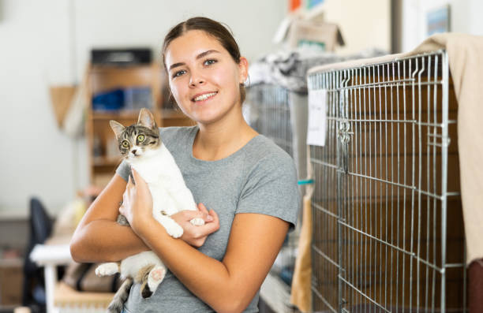
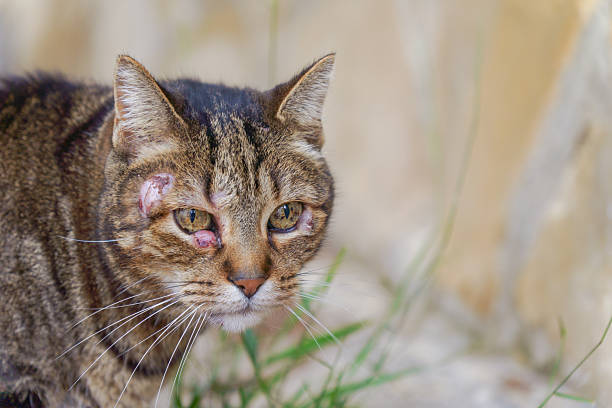
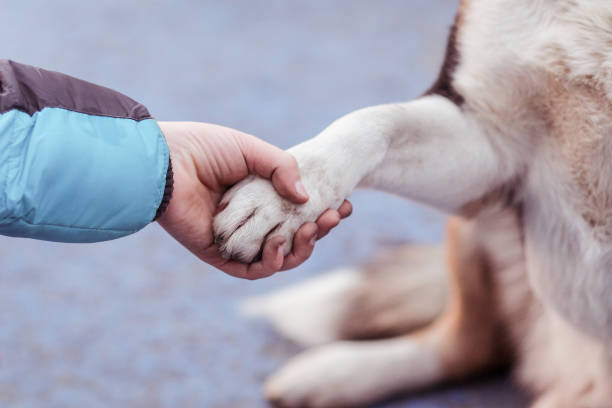
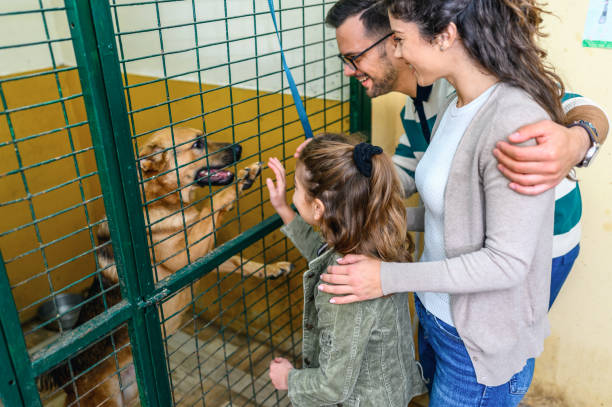

PatiProfil
Kullanıcı paneli
Başvurularım
5 Başvuru
- 🐾 Pamuk için başvuru gönderildi
- 🐾 Maviş için başvuru inceleniyor
- 🐾 Luna başvurusu onay bekliyor
İlanlarım
3 Aktif İlan
- 🐱 Boncuk ilanı yayında
- 🏠 Tekir için geçici yuva aranıyor
- ✏️ Minnoş ilanı güncellendi
Taleplerim
2 Destek Talebi
- 🍖 Mama desteği talebi bekliyor
- 🏥 Veteriner yönlendirmesi oluşturuldu
Birlikte Daha Fazla Patiye Umut Oluyoruz
Onları Barınaklara Değil, Güvenli Yuvalara Taşıyalım
Barınaklarda ve sokakta zor şartlarda yaşam mücadelesi veren birçok pati, sevgiye, bakıma ve güvenli bir yuvaya ihtiyaç duyuyor. PATILINK, onları yalnız bırakmamak; sahiplendirme, gönüllü destek ve farkındalık ile daha umutlu bir yaşam kurmak için geliştirilmiştir.
Patilli Gönüllü Ağı
Veterinerler, gönüllüler ve geçici yuva sağlayan destekçiler ile sokak hayvanları için dayanışma ağı oluşturuyoruz.
Veteriner Desteği
Bölgesindeki hayvanlara sağlık desteği sağlayan gönüllüler.
Geçici Yuva
Kısa süreli bakım sağlayan gönüllüler.
Saha Besleme
Mama ve su desteği sağlayan gönüllüler.
Ayşe Demir
Ayşe Demir Sokak Hayvanları Veteriner DestekçisiPATILINK ile Bir Patiye Umut Olduk
PATILINK sayesinde birçok sokak hayvanı güvenli yuvalara kavuştu ve gönüllü destek ağı büyüdü.


PATILINK üzerinden sahiplendiğim kedi artık güvenli bir yuvada. Platform sayesinde süreç daha kolay ilerledi ve gönüllülerle hızlı iletişim kurabildik.

Sinem T.
Gönüllü Destekçi
PATILINK sayesinde birçok sokak hayvanı güvenli yuvalara kavuşmuş ve gönüllü destek ağı genişlemiştir.

Görkem Ö.
Gönüllü Destekçi
PATILINK platformu sayesinde sahiplendirme süreci daha kolay ve verimli hale geldi.

Eda E.
Gönüllü Destekçi
PATILINK sayesinde sahiplendirdiğimiz hayvanlar artık güvenli bir şekilde yaşarlar.

Kristina P.
Gönüllü Destekçi
PATILINK ile birlikte gönüllü destekçi ağına katıldım ve sokak hayvanlarına yardımcı oldum. Bu sayede yardıma ihtiyaç duyan hayvanlara daha hızlı ulaşabildim.

Cem Ç.
Gönüllü Destekçi
Farkındalık Merkezi
Sokak hayvanları, bakım süreçleri ve sahiplendirme hakkında bilinç oluşturmayı amaçlayan içerikler.


